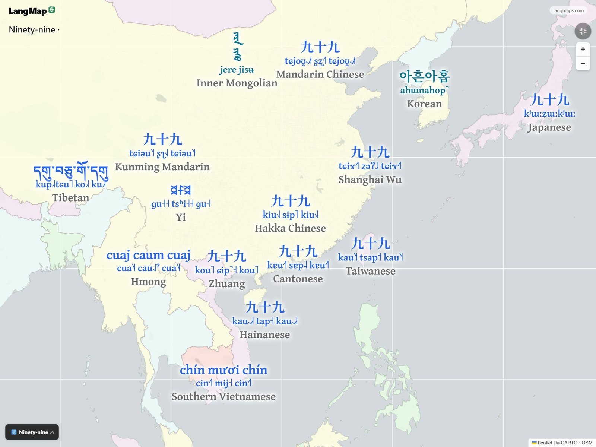
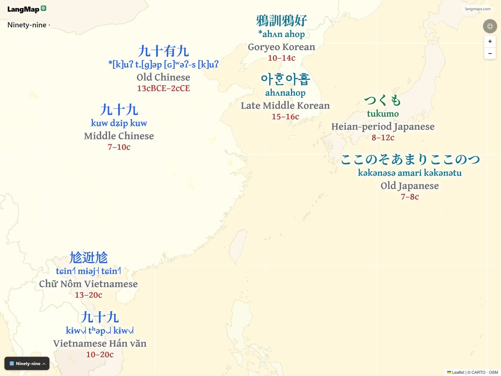

The Secret Life of 99 (Part 1): A Number Hidden in an Ancient Manuscript
- In Chinese, 99 is simply "nine-ten-nine." But even Chinese has surprising exceptions to its regular counting system.
- In Japan, the same three characters, 九十九, can become a poetic image of old age.
- In Korea, native words for the tens survive today, and a Chinese manuscript recorded them more than 900 years ago, long before Hangul existed.

Contents
Nine, Ten, Nine. What Could Be Simpler?
Think of the number 99.
In Mandarin Chinese, it is 九十九 (jiǔ shí jiǔ).
九十九
Nine · Ten · Nine
9 × 10 + 9 = 99
Perfectly logical.
The same characters are read kyūjūkyū in Japanese, gusipgu in Korean, and cửu thập cửu in Sino-Vietnamese.
Different sounds, the same arithmetic.
But even within China, numbers have their secrets.
In Cantonese, twenty can be expressed by a single character, 廿 (jaa6), rather than 二十. Thirty also has an old shortened character, 卅. And 卌 represents forty, though it is rare today.
二十 → 廿 (20)
三十 → 卅 (30)
四十 → 卌 (40)
These are not modern inventions. They are traces of older Chinese numerical expressions.
Still, 99 ordinarily follows the familiar nine-ten-nine pattern.
Until we cross the sea to Japan.
Japan: When 99 Becomes White Hair
In Japanese, 九十九 has an extraordinary alternative reading.
Tsukumo.
It appears in the classical expression 九十九髪 (tsukumo-gami), referring to an elderly woman's white hair.
One traditional explanation plays with the shape of Chinese characters.
百 = 100
白 = white
Remove one stroke from 百, and it becomes 白.
One less than a hundred. White hair.
The association is beautiful, although the word's precise origin remains uncertain. Tsukumo also referred to a kind of rush, and different explanations connect the plant, aging, and the number.
Japan once had native names for the tens, too.
Twenty was hata, thirty miso, and forty yoso.
Remnants survive in words such as 二十歳 (hatachi) and 三十路 (misoji).
But most native higher-number words disappeared from everyday counting as Chinese-derived numerals became dominant.
Across the sea, however, something remarkable happened.
Korea: The Numbers That Survived a Thousand Years
Modern Korean has two sets of numerals.
One is Chinese-derived. The other is native Korean.
And the native system gives the tens their own inherited names.
20: 스물 (seumul)
30: 서른 (seoreun)
40: 마흔 (maheun)
50: 쉰 (swin)
60: 예순 (yesun)
70: 일흔 (ilheun)
80: 여든 (yeodeun)
90: 아흔 (aheun)
Thus, 99 is 아흔아홉 (aheunahop).
These words are still used today.
But their history goes back much further than most people imagine.
Korean words in Chinese characters
In the early twelfth century, a Song Chinese official named Sun Mu compiled Jilin leishi (鷄林類事, 계림유사), recording words spoken in the Korean kingdom of Goryeo.
Hangul would not be created until the fifteenth century.
So how could Sun Mu record Korean?
He used Chinese characters to imitate Korean sounds.
Among the surviving entries are:
二十曰戌沒
三十曰實漢
四十曰麻刃
九十曰鴉訓
These characters were phonetic approximations of spoken Korean, not ordinary Chinese number expressions. Surviving copies show some variations.
They preserve historical forms related to modern seumul, seoreun, maheun, and aheun.

Imagine hearing words today whose ancestors were written down by a foreign visitor more than nine centuries ago.
Ninety-nine, the last stronghold
And there is one final surprise.
The native Korean counting system ordinarily reaches 99. At 100, the Chinese-derived 백 (baek) takes over.
Ninety-nine is its last stronghold.
But Korea is not the only place where Chinese-derived and inherited numerals coexist.
Farther south, another language has maintained two numerical traditions for centuries.
And there, even a group of ten may not contain ten things.
Continued in Part 2: When Ten Is Not Always Ten.
Sources
- Sun Mu, Jilin leishi 鷄林類事 (early 12th century)